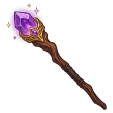

Trevor


MageTrevor Quickclaw
After their quest: Trevor Goldclaw
Gets into trouble for money. When it gets ugly, out come the claws and off he runs.
Ability
+10% coins; if they fail, he comes back unhurt
That's the value at Lv 10: at Lv 1 it's half and it grows every level.
How to get them
Shows up as a recruit candidate at the Inn.
Quest
Trevor and the Governor's treasure · Argenen
How it ends · Show spoiler
Trevor took the Governor's treasure and gave it back to the people. Well, most of it.
Party names
Show spoiler
- Watch Your Wallet: Trevor + Elioni
- The Guard and the Thief: Bron + Trevor
- Double or Nothing: Trevor + Tink Silvabajo
- Light Pockets: Elioni + Trevor + Tink Silvabajo
Chronicles
They unlock in-game as they level up. Each gives 1 Rune the first time you read it.
Chapter 1 (Lv 1) · Show spoiler
Claws
Trevor has two weaknesses: money and trouble, usually in that order. He's a sorcerer, and something more: when he gets nervous he grows claws, fur sprouts on his ears and his eyes turn yellow. He never quite knew where it comes from. His grandmother blamed an uncle who was "very hairy." What he does know is that coins are harder to count with claws, so he tries not to get nervous. He never manages.
Chapter 2 (Lv 5) · Show spoiler
Running (and coming back)
When a job turns ugly, Trevor is the first one out. Nobody runs like him: on all fours, leaping walls, coins jingling. That's why he always comes back without a scratch. What nobody mentions is what happens next: ten minutes later he comes back, fur standing on end, to fetch whoever got left behind. He says he came back because he forgot something. He never says what.
Chapter 3 (after their quest) · Show spoiler
The Governor's treasure
In Argenen, the Governor kept the city's treasure in a vault with seven locks. Trevor went in through the bathroom window, which had none. He took everything. That same night, the coins turned up at the doors of every house in town. Well, almost every one. Some never arrived. Nobody complained. Since that day he is no longer Trevor Quickclaw: he is Trevor Goldclaw.
Chapter 4 (Lv 15) · Show spoiler
Hairy coins
Trevor pays with coins that have hair on them. TomTom doesn't ask. The truth is he keeps them somewhere that grows fur when he transforms, and there's no way around it. What TomTom does know, and doesn't say, is that every month someone secretly pays off the Inn's overdue tab. The coins from those payments are hairy too. Trevor swears it wasn't him.
Chapter 5 (Lv 20) · Show spoiler
For the money
Ask Trevor why he sticks with the party and he'll tell you it's for the money. That with them he earns ten percent more. That it's just numbers. Nobody believes him. Well, a little: Trevor really does love money. But when Kupgush hugs him, the claws stay in. And when Enrique gets lost, he's the first one out looking for him. For free. Don't tell anyone.
Their player
This character is played by a real player from the D&D campaign that inspired the game.